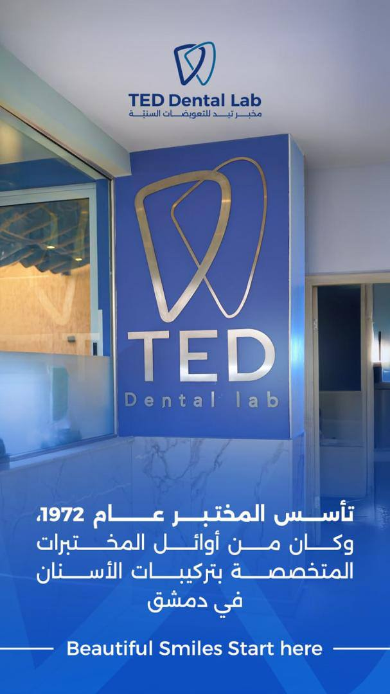

Beautiful Smiles Start Here
TED Dental Lab – أكثر من خمسة عقود من الدقة والابتكار منذ تأسيسه عام 1972، رسّخ مختبر TED Dental Lab مكانته كشريك موثوق لأطباء الأسنان، جامعاً بين الحِرفية اليدوية المتوارثة عبر الأجيال وأحدث ما توصلت إليه تكنولوجيا طب الأسنان الرقمي (Digital Dentistry).


في إطار دعمنا للتحول الرقمي وتسهيل سير العمل السريري، يوفر مخبر تيد أحدث أجهزة المسح الضوئي الفموي (Intraoral Scanner) للسادة الأطباء مجاناً لتجربة تقنية متطورة ودقة فائقة في أخذ الطبعات الرقمية.
اطلب الجهاز الآن عبر واتسابنستقبل ملفات الـ STL والـ PLY من أطباء الأسنان والمخابر حول العالم لتصميم الحالات بدقة واحترافية عالية
أرسل مقاساتك الرقمية (Intraoral Scans) عبر قنواتنا الرقمية واحصل على تصاميم CAD جاهزة للتصنيع بأعلى معايير الجودة.
تواصل لإرسال الملفات دولياًنماذج حقيقية من التعويضات السنية المنجزة في مخبر تيد


حلول مخبرية رقمية وتقليدية متكاملة